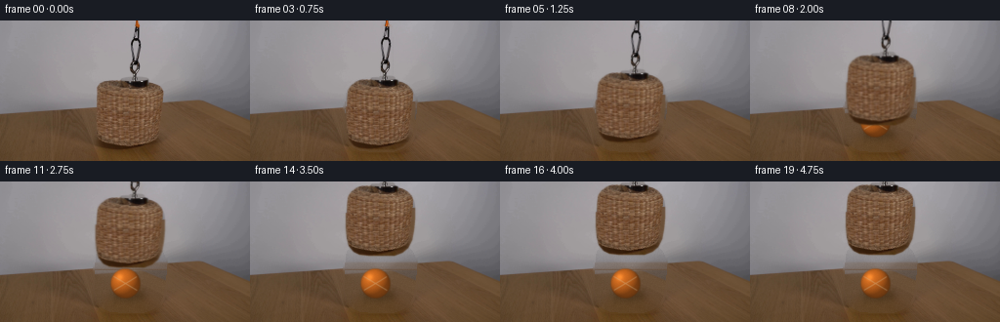
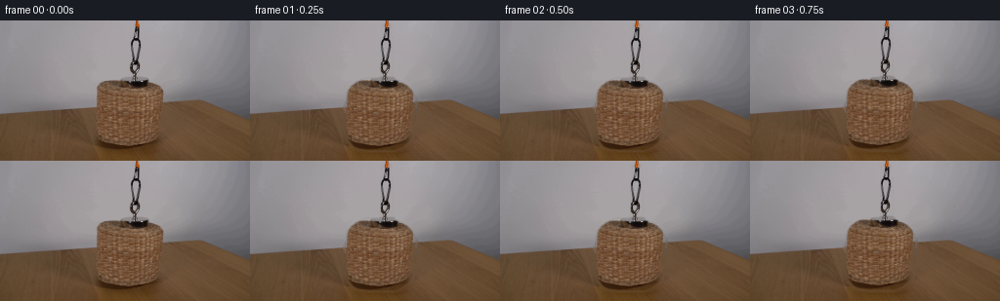

CODING AGENTS AS PIXEL WORLD MODELS
traex/DeepSeek-V4.1-Flash · 0169
点击播放 · 原生 RGB 像素
此结果可播放，但该运行尚未通过最终提交审核。页面展示不代表评测通过。
逐轮保存的候选
回放视频、检查图与代码变化。
每份候选均可单独播放。实际图片检查记录在下方工具轨迹中。
候选 01播放与检查图
点击播放 · 原生 RGB 像素


展开代码变化
--- 上一保存版本
+++ 本次保存版本
@@ -0,0 +1,277 @@
+from pathlib import Path
+
+import cv2
+import numpy as np
+from PIL import Image, ImageDraw, ImageFilter
+
+import artifact_io
+
+
+ROOT = Path(__file__).resolve().parent
+WIDTH = 256
+HEIGHT = 144
+FRAMES = 20
+FPS = 4
+
+
+def smoothstep(value):
+ value = np.clip(value, 0.0, 1.0)
+ return value * value * (3.0 - 2.0 * value)
+
+
+def mask_from_polygon(points, feather=0.65):
+ scale = 4
+ mask = Image.new("L", (WIDTH * scale, HEIGHT * scale), 0)
+ draw = ImageDraw.Draw(mask)
+ draw.polygon([(int(x * scale), int(y * scale)) for x, y in points], fill=255)
+ mask = mask.resize((WIDTH, HEIGHT), Image.Resampling.LANCZOS)
+ if feather:
+ mask = mask.filter(ImageFilter.GaussianBlur(feather))
+ return np.asarray(mask, dtype=np.float32) / 255.0
+
+
+def make_assembly_alpha():
+ basket_points = [
+ (120, 59), (139, 59), (146, 60), (151, 62), (156, 64),
+ (161, 67), (165, 71), (168, 77), (169, 84), (169, 95),
+ (168, 106), (166, 117), (162, 125), (156, 130), (148, 133),
+ (121, 133), (112, 132), (106, 129), (101, 123), (99, 115),
+ (98, 104), (98, 91), (99, 81), (100, 73), (103, 68),
+ (108, 64), (114, 61),
+ ]
+ magnet_points = [
+ (136, 7), (143, 7), (144, 10), (144, 17), (146, 18),
+ (146, 57), (148, 59), (149, 62), (131, 62), (132, 59),
+ (134, 57), (134, 18), (136, 17),
+ ]
+ basket = mask_from_polygon(basket_points, 0.55)
+ magnet = mask_from_polygon(magnet_points, 0.35)
+ return np.maximum(basket, magnet)
+
+
+def make_clean_background(frame, assembly_alpha):
+ mask = (assembly_alpha > 0.06).astype(np.uint8) * 255
+ mask = cv2.dilate(mask, np.ones((5, 5), np.uint8), iterations=1)
+ inpainted = cv2.inpaint(
+ np.clip(frame, 0, 255).astype(np.uint8), mask, 7, cv2.INPAINT_TELEA
+ ).astype(np.float32)
+
+ clean = inpainted.copy()
+ yy, xx = np.mgrid[0:HEIGHT, 0:WIDTH]
+ hole = assembly_alpha > 0.03
+
+ # Reuse the grain immediately beside the basket so the restored tabletop
+ # keeps the same scale and lighting as the rest of the shot.
+ for y in range(58, HEIGHT):
+ for x in range(96, 174):
+ if not hole[y, x]:
+ continue
+ left_x = max(0, x - 84)
+ right_x = min(WIDTH - 1, x + 84)
+ t = np.clip((x - 96) / 77.0, 0.0, 1.0)
+ sample = frame[y, left_x] * (1.0 - t) + frame[y, right_x] * t
+ if y >= 87:
+ clean[y, x] = 0.48 * inpainted[y, x] + 0.52 * sample
+ else:
+ clean[y, x] = 0.72 * inpainted[y, x] + 0.28 * sample
+
+ # The wall is a soft, slightly cool gradient. Remove any inpainting streaks.
+ wall = (yy < 91) & hole
+ horizontal = np.zeros_like(clean)
+ for y in range(0, 91):
+ left = frame[y, 75:96].mean(axis=0)
+ right = frame[y, 174:195].mean(axis=0)
+ t = np.linspace(0.0, 1.0, WIDTH)[:, None]
+ horizontal[y] = left * (1.0 - t) + right * t
+ clean[wall] = 0.35 * clean[wall] + 0.65 * horizontal[wall]
+
+ # A very small amount of sensor-like variation keeps the reconstructed
+ # region from looking like a flat patch when it is revealed.
+ rng = np.random.default_rng(169)
+ noise = rng.normal(0.0, 1.25, (HEIGHT, WIDTH, 1)).astype(np.float32)
+ clean += noise * hole[..., None]
+ return np.clip(clean, 0, 255)
+
+
+def make_ball_sprite(radius=15.2):
+ scale = 5
+ size = int(np.ceil(radius * 2.0 + 10.0))
+ big_size = size * scale
+ yy, xx = np.mgrid[0:big_size, 0:big_size].astype(np.float32)
+ center = (big_size - 1.0) * 0.5
+ nx = (xx - center) / (radius * scale)
+ ny = (yy - center) / (radius * scale)
+ rr = nx * nx + ny * ny
+ inside = rr <= 1.0
+
+ nz = np.sqrt(np.clip(1.0 - rr, 0.0, 1.0))
+ light = np.array([-0.50, -0.62, 0.60], dtype=np.float32)
+ light /= np.linalg.norm(light)
+ diffuse = np.clip(nx * light[0] + ny * light[1] + nz * light[2], 0.0, 1.0)
+ shade = 0.58 + 0.50 * diffuse
+ rim = 0.83 + 0.17 * nz
+
+ base = np.array([196.0, 102.0, 31.0], dtype=np.float32)
+ rgb = base[None, None, :] * (shade * rim)[..., None]
+ rgb += np.array([24.0, 11.0, 2.0], dtype=np.float32) * np.clip(nz - 0.2, 0, 1)[..., None]
+
+ highlight = np.exp(-(((nx + 0.38) / 0.23) ** 2 + ((ny + 0.42) / 0.23) ** 2))
+ rgb += highlight[..., None] * np.array([42.0, 33.0, 18.0], dtype=np.float32)
+
+ rng = np.random.default_rng(17)
+ fuzz = rng.normal(0.0, 0.035, (big_size, big_size, 1)).astype(np.float32)
+ rgb *= 1.0 + fuzz
+
+ # Two restrained tennis-ball seams, antialiased at the supersampled size.
+ seam = Image.new("L", (big_size, big_size), 0)
+ sd = ImageDraw.Draw(seam)
+ r = radius * scale
+ c = center
+ width = max(2, int(scale * 0.82))
+ sd.line(
+ [(c - 0.78 * r, c - 0.47 * r), (c - 0.28 * r, c - 0.18 * r),
+ (c + 0.30 * r, c + 0.18 * r), (c + 0.78 * r, c + 0.47 * r)],
+ fill=255,
+ width=width,
+ joint="curve",
+ )
+ sd.line(
+ [(c - 0.76 * r, c + 0.45 * r), (c - 0.24 * r, c + 0.15 * r),
+ (c + 0.32 * r, c - 0.18 * r), (c + 0.76 * r, c - 0.45 * r)],
+ fill=255,
+ width=width,
+ joint="curve",
+ )
+ seam_arr = np.asarray(seam, dtype=np.float32) / 255.0
+ seam_arr = cv2.GaussianBlur(seam_arr, (0, 0), scale * 0.38)
+ seam_color = np.array([218.0, 202.0, 164.0], dtype=np.float32)
+ rgb = rgb * (1.0 - 0.42 * seam_arr[..., None]) + seam_color * (0.42 * seam_arr[..., None])
+
+ alpha = inside.astype(np.float32)
+ alpha = cv2.GaussianBlur(alpha, (0, 0), scale * 0.55)
+ rgb = np.clip(rgb, 0, 255)
+ rgba = np.dstack([rgb, alpha * 255.0]).astype(np.uint8)
+ rgba = cv2.resize(rgba, (size, size), interpolation=cv2.INTER_AREA)
+ return rgba
+
+
+def soft_ellipse_shadow(shape, center, radii, strength, blur):
+ layer = Image.new("L", (shape[1], shape[0]), 0)
+ draw = ImageDraw.Draw(layer)
+ cx, cy = center
+ rx, ry = radii
+ draw.ellipse((cx - rx, cy - ry, cx + rx, cy + ry), fill=int(255 * strength))
+ layer = layer.filter(ImageFilter.GaussianBlur(blur))
+ return np.asarray(layer, dtype=np.float32) / 255.0
+
+
+def alpha_composite(base, rgba, x, y):
+ x = int(np.floor(x))
+ y = int(np.floor(y))
+ h, w = rgba.shape[:2]
+ x0 = max(0, x)
+ y0 = max(0, y)
+ x1 = min(WIDTH, x + w)
+ y1 = min(HEIGHT, y + h)
+ if x1 <= x0 or y1 <= y0:
+ return base
+ sx0 = x0 - x
+ sy0 = y0 - y
+ sx1 = sx0 + (x1 - x0)
+ sy1 = sy0 + (y1 - y0)
+ src = rgba[sy0:sy1, sx0:sx1].astype(np.float32)
+ alpha = src[..., 3:4] / 255.0
+ dst = base[y0:y1, x0:x1]
+ dst[:] = src[..., :3] * alpha + dst * (1.0 - alpha)
+ return base
+
+
+def draw_cord(image, dx, dy):
+ top = 7.0 + dy
+ if top <= 0.2:
+ return image
+ overlay = Image.new("RGBA", (WIDTH * 4, HEIGHT * 4), (0, 0, 0, 0))
+ draw = ImageDraw.Draw(overlay)
+ points = []
+ steps = 10
+ for index in range(steps + 1):
+ t = index / steps
+ y = -2.0 + (top + 2.0) * t
+ x = 139.7 + 0.75 * dx + 0.45 * np.sin(t * np.pi * 1.3)
+ points.append((x * 4.0, y * 4.0))
+ draw.line(points, fill=(54, 25, 8, 255), width=9, joint="curve")
+ draw.line(points, fill=(184, 78, 15, 255), width=6, joint="curve")
+ draw.line(points, fill=(229, 113, 31, 255), width=2, joint="curve")
+ cord = np.asarray(overlay.resize((WIDTH, HEIGHT), Image.Resampling.LANCZOS), dtype=np.float32)
+ alpha = cord[..., 3:4] / 255.0
+ image[:] = cord[..., :3] * alpha + image * (1.0 - alpha)
+ return image
+
+
+def render():
+ frame0 = np.asarray(Image.open(ROOT / "first_frame.png").convert("RGB"))
+ source = frame0.astype(np.float32)
+
+ assembly_alpha = make_assembly_alpha()
+ clean = make_clean_background(source, assembly_alpha)
+ sprite = np.dstack([source, assembly_alpha * 255.0]).astype(np.uint8)
+
+ ball = make_ball_sprite()
+ ball_x = 129.0 - ball.shape[1] * 0.5
+ ball_y = 104.5 - ball.shape[0] * 0.5
+ ball_shadow = soft_ellipse_shadow((HEIGHT, WIDTH), (131.0, 117.0), (18.0, 4.7), 0.34, 3.4)
+ basket_shadow = soft_ellipse_shadow((HEIGHT, WIDTH), (134.0, 126.0), (37.0, 7.0), 0.20, 6.0)
+
+ tmp = ROOT / ".tmp"
+ tmp.mkdir(exist_ok=True)
+ Image.fromarray(np.clip(clean, 0, 255).astype(np.uint8)).save(tmp / "clean_background.png")
+ Image.fromarray(sprite).save(tmp / "basket_sprite.png")
+ Image.fromarray(ball).save(tmp / "ball_sprite.png")
+
+ frames = []
+ for index in range(FRAMES):
+ if index == 0:
+ frames.append(frame0.copy())
+ continue
+
+ u = smoothstep((index - 2.0) / 13.0)
+ dy = -58.0 * u
+ dx = 0.75 * np.sin(u * np.pi * 1.6) * np.sin(u * np.pi)
+
+ frame = clean.copy()
+ shadow_strength = 0.13 + 0.12 * u
+ shadow = basket_shadow * shadow_strength
+ frame *= 1.0 - shadow[..., None] * 0.55
+ frame *= 1.0 - ball_shadow[..., None] * 0.62
+ frame = alpha_composite(frame, ball, ball_x, ball_y)
+
+ draw_cord(frame, dx, dy)
+
+ matrix = np.float32([[1, 0, dx], [0, 1, dy]])
+ moved = cv2.warpAffine(
+ sprite,
+ matrix,
+ (WIDTH, HEIGHT),
+ flags=cv2.INTER_LINEAR,
+ borderMode=cv2.BORDER_CONSTANT,
+ borderValue=(0, 0, 0, 0),
+ )
+ alpha = moved[..., 3:4].astype(np.float32) / 255.0
+ frame[:] = moved[..., :3].astype(np.float32) * alpha + frame * (1.0 - alpha)
+
+ frames.append(np.clip(frame, 0, 255).astype(np.uint8))
+
+ frames = np.stack(frames, axis=0)
+ assert frames.shape == (FRAMES, HEIGHT, WIDTH, 3)
+ assert frames.dtype == np.uint8
+ assert np.array_equal(frames[0], frame0)
+ return frames
+
+
+def main():
+ frames = render()
+ artifact_io.save(frames, ROOT)
+
+
+if __name__ == "__main__":
+ main()
可观测工具轨迹
实际执行的命令与返回图片。
命令 1exit 0
/bin/bash -c "pwd && rg --files -g '"'!*.mp4'"' -g '"'!*.mov'"' | sed -n '1,160p'"
命令 2exit 0
/bin/bash -c "printf '%s\\n' '--- prompt.txt ---'; sed -n '1,240p' prompt.txt; printf '%s\\n' '--- GENERATION_RULES.md ---'; sed -n '1,280p' GENERATION_RULES.md"
命令 3exit 0
/bin/bash -c 'ls -lah; file first_frame.png; identify first_frame.png 2>/dev/null || true; command -v ffmpeg; ffmpeg -version | head -n 3'
命令 4exit 0
/bin/bash -c "sed -n '1,260p' artifact_io.py"
命令 5exit 0
/bin/bash -c "sed -n '1,260p' player_template.html"
命令 6exit 0
/bin/bash -c "python - <<'PY'
from PIL import Image
import numpy as np
im=Image.open('first_frame.png').convert('RGB')
a=np.asarray(im)
print('mode,size', im.mode, im.size, 'shape', a.shape)
print('min/max/mean', a.min((0,1)), a.max((0,1)), a.mean((0,1)))
# block mean 16x9 grid for basic scene layout
for y in range(0,144,16):
row=[]
for x in range(0,256,16):
c=a[y:y+16,x:x+16].mean((0,1)).astype(int)
row.append('#%02x%02x%02x'%tuple(c))
print(y, ' '.join(row))
PY"命令 7exit 0
/bin/bash -c "python - <<'PY'
from PIL import Image
import numpy as np
im=np.asarray(Image.open('first_frame.png').convert('RGB')).astype(float)
# resize average to 128x72, ascii brightness + hue class
for y in range(0,144,2):
row=''
for x in range(0,256,2):
p=im[y:y+2,x:x+2].mean((0,1)); r,g,b=p
Y=.2126*r+.7152*g+.0722*b
chars='@%#*+=-:. '
row+=chars[min(9,int(Y/256*10))]
print(f'{y:03d} {row}')
PY"命令 8exit 0
/bin/bash -c "python - <<'PY'
from PIL import Image
import numpy as np
from colorsys import rgb_to_hsv
im=np.asarray(Image.open('first_frame.png').convert('RGB')).astype(float)
# quantized kmeans simple
pix=im.reshape(-1,3)
rng=np.random.default_rng(3)
cent=pix[rng.choice(len(pix),12,replace=False)]
for _ in range(30):
d=((pix[:,None,:]-cent[None,:,:])**2).sum(2)
lab=d.argmin(1)
new=np.array([pix[lab==i].mean(0) if np.any(lab==i) else cent[i] for i in range(len(cent))])
if np.max(abs(new-cent))<.1: break
cent=new
counts=np.bincount(lab,minlength=len(cent))
for i in np.argsort(-counts):
c=cent[i].astype(int); r,g,b=c; h,s,v=rgb_to_hsv(*(c/255))
print(f'{counts[i]:5d} {counts[i]/len(pix):.3f} #{r:02x}{g:02x}{b:02x} rgb={tuple(c)} hsv=({h*360:.0f},{s:.2f},{v:.2f})')
PY"命令 9exit 0
/bin/bash -c "python - <<'PY'
from PIL import Image
import numpy as np
im=np.asarray(Image.open('first_frame.png').convert('RGB')).astype(np.float32)
r,g,b=im.transpose(2,0,1)
mx=im.max(2); mn=im.min(2); sat=(mx-mn)/(mx+1e-5); val=mx/255
# hue
h=np.zeros_like(mx)
d=mx-mn+1e-5
m=(mx==r); h[m]=((g-b)[m]/d[m])%6
m=(mx==g)&~(mx==r); h[m]=(b-r)[m]/d[m]+2
m=(mx==b)&~(mx==r)&~(mx==g); h[m]=(r-g)[m]/d[m]+4
h=h*60
# print category map at 2px: B gray bg, T brown table, O orange/highsat, K black, W bright gray
for y in range(0,144,2):
row=''
for x in range(0,256,2):
yy=slice(y,y+2); xx=slice(x,x+2)
S=sat[yy,xx].mean(); V=val[yy,xx].mean(); H=h[yy,xx].mean(); R=r[yy,xx].mean(); G=g[yy,xx].mean(); B=b[yy,xx].mean()
if S>.28 and H<52:
if R>150 and G>70: ch='O'
elif V<.28: ch='K'
elif R>G*1.35 and G>B*1.2: ch='w'
else: ch='t'
elif V<.28: ch='K'
elif S<.12 and V>.58: ch='.'
elif S<.18: ch=':'
else: ch=' '
row+=ch
print(f'{y:03d} {row}')
PY"命令 10exit 0
/bin/bash -c "python - <<'PY'
from PIL import Image
import numpy as np
im=np.asarray(Image.open('first_frame.png').convert('RGB'))
# Detect dark pixels and orange-ish high red
r,g,b=im.transpose(2,0,1).astype(float)
# stats per y and x in central crop
for y in range(0,144,4):
row=[]
for x in range(0,256,8):
p=im[y:y+4,x:x+8].mean((0,1)); R,G,B=p
if R>G*1.45 and R>B*1.5 and R>65: c='O'
elif max(p)<70: c='#'
elif max(p)<105: c='x'
elif max(p)<135: c='+'
elif max(p)<165: c='-'
else: c='.'
row.append(c)
print(f'{y:03d}', ''.join(row))
# bbox by rough color masks
mask=(r>g*1.22)&(g>b*1.12)&(r>60)
ys,xs=np.where(mask)
print('warm bbox', xs.min(),ys.min(),xs.max(),ys.max(), 'count',mask.sum())
mask2=(r>g*1.35)&(r>b*1.6)&(r>95)
ys,xs=np.where(mask2)
print('orange bbox', xs.min(),ys.min(),xs.max(),ys.max(), 'count',mask2.sum())
# vertical/horiz means central
PY"命令 11exit 0
/bin/bash -c "python - <<'PY'
from PIL import Image
im=Image.open('first_frame.png').convert('RGB')
# nearest-neighbor x4 for numeric inspection saved in .tmp
im.resize((1024,576), Image.Resampling.NEAREST).save('.tmp/first_frame_4x.png')
# print selected pixel values around cord/ball/basket
import numpy as np
a=np.asarray(im)
for y in [0,2,5,10,18,24,40,60,62,64,66,70,76,84,92,96,100,124,128,132,136,140]:
print(y, [(x,tuple(a[y,x])) for x in [0,30,60,100,130,136,140,144,150,160,180,200,220,250]])
PY"命令 12exit 0
/bin/bash -c "python - <<'PY'
from PIL import Image
import numpy as np
a=np.asarray(Image.open('first_frame.png').convert('RGB')).astype(np.float32)
# color masks on crop x100:180 y58:96, print 1 char per pixel? width 80, height 38 manageable
r,g,b=a.transpose(2,0,1)
for y in range(58,97):
row=''
for x in range(100,181):
R,G,B=a[y,x]
if R>G*1.5 and R>B*1.8 and R>80: c='O'
elif max(R,G,B)<35: c='#'
elif max(R,G,B)<60: c='x'
elif R>G*1.22 and G>B*1.10: c='w'
elif R>G*1.12 and G>B*1.07: c='t'
elif max(R,G,B)<105: c='+'
elif max(R,G,B)<140: c='-'
else: c='.'
row+=c
print(f'{y:03d} {row}')
PY"命令 13exit 0
/bin/bash -c "python - <<'PY'
from PIL import Image
import numpy as np
a=np.asarray(Image.open('first_frame.png').convert('RGB')).astype(np.float32)
# make coordinate listing: use edge strength + dark mask, connected components perhaps scipy present?
try:
import scipy; print('scipy',scipy.__version__)
except Exception as e: print('no scipy',e)
try:
import cv2; print('cv2',cv2.__version__)
except Exception as e: print('no cv2',e)
# print original 80x40 crop at x100..180 y58..97 with symbols based on saturation and darkness
r,g,b=a.transpose(2,0,1); mx=a.max(2); mn=a.min(2); sat=(mx-mn)/(mx+1e-5)
for y in range(56,100,2):
row=''
for x in range(95,185,2):
R,G,B=a[y:y+2,x:x+2].mean((0,1)); S=sat[y:y+2,x:x+2].mean(); V=max(R,G,B)
if R>G*1.4 and R>B*1.6 and R>90: c='O'
elif V<28: c='#'
elif V<50: c='X'
elif V<75: c='x'
elif V<100: c='+'
elif V<130: c='-'
elif S>.24: c='t'
elif V<160: c='.'
else: c=' '
row+=c
print(f'{y:03d} {row}')
PY"命令 14exit 0
/bin/bash -c "python - <<'PY'
from PIL import Image
import numpy as np
a=np.asarray(Image.open('first_frame.png').convert('RGB')).astype(np.float32)
# stats of likely ball color region based on warm saturation. print HSV stats for x110:175,y70:96
import cv2
hsv=cv2.cvtColor(a.astype(np.uint8), cv2.COLOR_RGB2HSV).astype(float)
for box in [(110,70,175,96),(120,75,165,95),(130,78,160,95),(105,72,175,100)]:
x0,y0,x1,y1=box
sub=hsv[y0:y1,x0:x1]; rgb=a[y0:y1,x0:x1]
mask=(sub[:,:,1]>90)&(sub[:,:,2]>90)
print(box,'n',mask.sum(),'rgb',rgb[mask].mean(0) if mask.any() else None,'hsv',sub[mask].mean(0) if mask.any() else None)
PY"命令 15exit 0
/bin/bash -c "python - <<'PY'
from PIL import Image
import numpy as np, cv2
a=np.asarray(Image.open('first_frame.png').convert('RGB')).astype(np.float32)
hsv=cv2.cvtColor(a.astype(np.uint8),cv2.COLOR_RGB2HSV).astype(float)
# likely ball pixels saturated orange hue 0..30, sat>70, value>80, region x100:180,y65:105
mask=(hsv[:,:,0]<30)&(hsv[:,:,1]>80)&(hsv[:,:,2]>75)
mask[:60]=False; mask[105:]=False; mask[:,:95]=False; mask[:,185:]=False
ys,xs=np.where(mask)
print(len(xs),xs.min(),xs.max(),ys.min(),ys.max(), 'center',xs.mean(),ys.mean())
for y in range(65,105,2):
row=''
for x in range(95,185,2):
n=mask[y:y+2,x:x+2].sum()
row += '#' if n>=3 else '+' if n>=1 else '.'
print(f'{y:03d}',row)
# Hough circles
gray=cv2.cvtColor(a.astype(np.uint8),cv2.COLOR_RGB2GRAY)
circles=cv2.HoughCircles(gray,cv2.HOUGH_GRADIENT,dp=1,minDist=10,param1=50,param2=12,minRadius=8,maxRadius=40)
print(circles)
PY"命令 16exit 0
/bin/bash -c "python - <<'PY'
from PIL import Image
import numpy as np
a=np.asarray(Image.open('first_frame.png').convert('RGB')).astype(float)
# Create 4x nearest ascii thumbnail? list gradients at rows by sample blocks around likely ball
# Try kmeans crop x95:185 y62:104 with 5 clusters and bbox
import cv2
crop=a[62:104,95:185].reshape(-1,3)
criteria=(cv2.TERM_CRITERIA_EPS+cv2.TERM_CRITERIA_MAX_ITER,50,.2)
_,lab,cent=cv2.kmeans(crop.astype(np.float32),6,None,criteria,10,cv2.KMEANS_PP_CENTERS)
counts=np.bincount(lab.ravel())
for i in np.argsort(-counts):
print(i,counts[i],cent[i].round(1), '#%02x%02x%02x'%tuple(cent[i].astype(int)))
# assign map
for y in range(62,104,2):
row=''
for x in range(95,185,2):
inds=lab.ravel()[((y-62)*90+(x-95)):((y-62)*90+(x-95)+2)]
row += str(np.bincount(inds,minlength=6).argmax())
print(f'{y:03d} {row}')
PY"命令 17exit 0
/bin/bash -c "python - <<'PY'
from PIL import Image
import numpy as np
a=np.asarray(Image.open('first_frame.png').convert('RGB'))
print('CORD/ MAGNET COLUMN every row (x 132..148), only notable pixels')
for y in range(0,66):
vals=[]
for x in range(128,153):
r,g,b=map(int,a[y,x])
if (max(r,g,b)-min(r,g,b)>35) or max(r,g,b)<80 or (x in [139,140,141] and y%4==0):
vals.append((x,(r,g,b)))
if vals: print(f'{y:02d}',vals)
PY"命令 18exit 0
/bin/bash -c "python - <<'PY'
from PIL import Image
import numpy as np, cv2
a=np.asarray(Image.open('first_frame.png').convert('RGB')).astype(np.uint8)
hsv=cv2.cvtColor(a,cv2.COLOR_RGB2HSV)
# summarize rows: median and percentiles for x=100..180 and side regions
for y in range(55,145,5):
def stat(x0,x1):
sub=a[y:y+5,x0:x1].reshape(-1,3)
return tuple(np.median(sub,0).astype(int)), tuple(np.percentile(sub,[10,90],axis=0).astype(int).flatten())
print(y, 'center',stat(100,180), 'left',stat(0,80), 'right',stat(190,256))
# edge map crop ascii x90..190, y55..145, threshold
gray=cv2.cvtColor(a,cv2.COLOR_RGB2GRAY)
ed=cv2.Canny(gray,25,70)
for y in range(55,145,2):
row=''
for x in range(90,191,2):
v=ed[y:y+2,x:x+2].sum()
row += '#' if v>2 else '+' if v else ' '
print(f'{y:03d} {row}')
PY"命令 19exit 0
/bin/bash -c "python - <<'PY'
from PIL import Image
import numpy as np
a=np.asarray(Image.open('first_frame.png').convert('RGB')).astype(np.float32)
# use grayscale template? print row color summaries in central basket y 60..132, x 90..190
for y in range(58,136,3):
out=[]
for x in range(90,191,10):
p=a[y:y+3,x:x+10].mean((0,1)); out.append('%02x%02x%02x'%tuple(p.astype(int)))
print(y, ' '.join(out))
PY"命令 20exit 0
/bin/bash -c "python - <<'PY'
from PIL import Image
import numpy as np, cv2
a=np.asarray(Image.open('first_frame.png').convert('RGB')).astype(np.float32)
g=cv2.cvtColor(a.astype(np.uint8),cv2.COLOR_RGB2GRAY).astype(float)
# Sobel x abs
sx=np.abs(cv2.Sobel(g,cv2.CV_64F,1,0,ksize=3))
for y in [60,62,64,66,68,70,72,76,80,84,88,92,96,100,105,110,115,120,124,128,130,132]:
vals=sx[y]
inds=np.argsort(vals[80:200])[-12:]+80
inds=sorted(inds,key=lambda x:vals[x],reverse=True)
print(y, [(int(x),int(vals[x])) for x in inds[:8]])
PY"命令 21exit 0
/bin/bash -c "python - <<'PY'
from PIL import Image
import numpy as np
a=np.asarray(Image.open('first_frame.png').convert('RGB')).astype(float)
for y in range(82,126,4):
# average orange scores x=90..190
R,G,B=a[y].T
score=(R-0.5*(G+B)) * ((R>75)&(G>40)).astype(float)
# local max x range
inds=np.argsort(score[90:190])[-10:]+90
print(y, [(int(x),round(float(score[x]),1),tuple(a[y,x].astype(int))) for x in sorted(inds)])
PY"命令 22exit 0
/bin/bash -c "python - <<'PY'
from PIL import Image
import numpy as np, cv2
a=np.asarray(Image.open('first_frame.png').convert('RGB')).astype(np.float32)
# Reconstruct rough ball circle params by comparing local radial symmetric fit around candidate center.
# print radial profile median around centers
for cx,cy in [(127,87),(130,87),(128,85),(129,90),(126,90),(133,87),(128,88)]:
vals=[]
for r in range(5,31):
ang=np.linspace(0,2*np.pi,180,endpoint=False)
xs=np.clip((cx+r*np.cos(ang)).round().astype(int),0,255); ys=np.clip((cy+r*np.sin(ang)).round().astype(int),0,143)
p=a[ys,xs]; vals.append(tuple(np.median(p,axis=0).astype(int)))
print('center',cx,cy,'r10',vals[5],'r15',vals[10],'r20',vals[15],'r25',vals[20],'r30',vals[25])
PY"命令 23exit 0
/bin/bash -c "python - <<'PY'
from PIL import Image
import numpy as np, cv2
a=np.asarray(Image.open('first_frame.png').convert('RGB')).astype(np.float32)
# Vertical/horizontal sample grid in likely ball crop to show texture using 4x4 blocks x 100..170 y70..110
chars=' .:-=+*#%@'
# scale local brightness after normalize
for y in range(68,112,2):
row=''
for x in range(96,176,2):
p=a[y:y+2,x:x+2].mean((0,1)); v=p.mean();
row += chars[min(9,int(v/170*10))]
print(f'{y:03d} {row}')
PY"命令 24exit 0
/bin/bash -c "python - <<'PY'
from PIL import Image
import numpy as np
a=np.asarray(Image.open('first_frame.png').convert('RGB')).astype(float)
# mean gradient at y row 62..100 for various x slices
for x0,x1 in [(0,50),(50,90),(90,100),(100,110),(110,130),(130,150),(150,170),(170,190),(190,220),(220,256)]:
print((x0,x1), [(y,tuple(a[y,x0:x1].mean(0).astype(int))) for y in [60,62,64,66,68,70,72,74,76,80,84,88,92,96,100,110,120,130,140]])
PY"命令 25exit 0
/bin/bash -c "python - <<'PY'
from PIL import Image
import numpy as np
a=np.asarray(Image.open('first_frame.png').convert('RGB')).astype(float)
# contrast map by local 3x3 std over central crop, sampled blocks 3x3 -> ascii
# rows 58:132, x95:185
for y in range(58,132,2):
row=''
for x in range(95,186,2):
sub=a[y:y+2,x:x+2]; std=sub.reshape(-1,3).std(0).mean(); v=sub.mean()
if v<40: c='#'
elif std>20: c='X'
elif std>12: c='x'
elif std>8: c='+'
elif std>5: c='-'
else: c='.'
row+=c
print(f'{y:03d} {row}')
PY"命令 26exit 0
/bin/bash -c "python - <<'PY'
from PIL import Image
import numpy as np
a=np.asarray(Image.open('first_frame.png').convert('RGB')).astype(float)
# print x125..155, y0..64 map by brightness, 1px horizontal grouped 1 char
chars=' .:-=+*#%@'
for y in range(0,65):
row=''
for x in range(125,156):
v=a[y,x].mean()
if v<20:c='@'
elif v<40:c='#'
elif v<65:c='*'
elif v<90:c='+'
elif v<115:c='='
elif v<140:c='-'
elif v<160:c=':'
elif v<180:c='.'
else:c=' '
row+=c
print(f'{y:02d} {row}')
PY"命令 27exit 0
/bin/bash -c "python - <<'PY'
from PIL import Image
import numpy as np
a=np.asarray(Image.open('first_frame.png').convert('RGB')).astype(np.float32)
# horizontal extent of object at each y: difference from smooth expected background using neighboring columns? Print RGB samples for y rows at every 8 px
for y in [0,10,20,30,40,50,58,60,62,64,66,68,70,72,76,80,84,88,92,96,100,110,120,124,128,130,132,136,140]:
print('\\nY',y)
for x in range(0,256,16):
p=a[y,x].astype(int); print('%3d:%02x%02x%02x'%(x,*p),end=' ')
print()
PY"命令 28exit 0
/bin/bash -c "python - <<'PY'
from PIL import Image
import numpy as np
a=np.asarray(Image.open('first_frame.png').convert('RGB')).astype(float)
# detect basket interior outer boundary by color compared to local vertical texture. Save candidate masks for visual via data no image tool.
# print 1px chars x90..190 every 2 rows using smoothness and color
for y in range(58,136,2):
row=''
for x in range(90,191,2):
p=a[y:y+2,x:x+2].reshape(-1,3); mean=p.mean(0); R,G,B=mean
sat=(max(mean)-min(mean))/max(mean)
if max(mean)<35: c='#'
elif R>G*1.35 and G>B*1.15: c='w'
elif sat>.22: c='t'
elif max(mean)<75: c='+'
elif max(mean)<110: c='-'
elif max(mean)<145: c='.'
else: c=' '
row+=c
print(f'{y:03d} {row}')
PY"命令 29exit 1
/bin/bash -c "python - <<'PY'
from PIL import Image
import numpy as np, cv2
a=np.asarray(Image.open('first_frame.png').convert('RGB')).astype(np.float32)
g=cv2.cvtColor(a.astype(np.uint8),cv2.COLOR_RGB2GRAY).astype(float)
# smooth row and diff at 2 px, find max edges in x80..190
for y in range(58,136,2):
row=cv2.GaussianBlur(g[y:y+2].mean(0), (0,0), 1)
d=np.abs(np.diff(row))
cand=np.argsort(d[80:200])[-6:]+80
print(f'{y:03d}', [(int(x),round(float(d[x]),1)) for x in sorted(cand,key=lambda z:d[z],reverse=True)])
PY"命令 30exit 1
/bin/bash -c "python - <<'PY'
from PIL import Image
import numpy as np, cv2
a=np.asarray(Image.open('first_frame.png').convert('RGB')).astype(np.float32)
g=cv2.cvtColor(a.astype(np.uint8),cv2.COLOR_RGB2GRAY).astype(float)
for y in range(58,136,2):
row=cv2.GaussianBlur(g[y:y+2].mean(0), (0,0), 1)
d=np.abs(np.diff(row))
cand=list(np.argsort(d[80:200])[-6:]+80)
cand=sorted(cand,key=lambda z:float(d[z]),reverse=True)
print(f'{y:03d}', [(int(x),round(float(d[x]),1)) for x in cand])
PY"命令 31exit 0
/bin/bash -c "python - <<'PY'
from PIL import Image
import numpy as np, cv2
a=np.asarray(Image.open('first_frame.png').convert('RGB')).astype(np.float32)
g=cv2.cvtColor(a.astype(np.uint8),cv2.COLOR_RGB2GRAY).astype(float)
for y in range(58,136,2):
row=cv2.GaussianBlur(g[y:y+2].mean(0), (0,0), 1)
d=np.abs(np.diff(row)).ravel()
inds=np.argsort(d[80:200])[-6:]+80
inds=sorted(inds.tolist(),key=lambda z:float(d[z]),reverse=True)
print(f'{y:03d}', [(int(x),round(float(d[x]),1)) for x in inds])
PY"命令 32exit 0
/bin/bash -c "python - <<'PY'
from PIL import Image
import numpy as np, cv2
a=np.asarray(Image.open('first_frame.png').convert('RGB')).astype(np.float32)
g=cv2.cvtColor(a.astype(np.uint8),cv2.COLOR_RGB2GRAY).astype(float)
for y in range(58,136,2):
row=cv2.GaussianBlur(g[y:y+2].mean(0), (0,0), 1)
d=np.abs(np.diff(row)).ravel()
cand=np.argsort(d[80:200])[-6:]+80
cand=sorted(cand.tolist(),key=lambda z:float(d[z]),reverse=True)
print(f'{y:03d}', [(int(x),round(float(d[x]),1)) for x in cand])
PY"命令 33exit 1
/bin/bash -c "python - <<'PY'
from PIL import Image
import numpy as np, cv2
a=np.asarray(Image.open('first_frame.png').convert('RGB')).astype(np.float32)
g=cv2.cvtColor(a.astype(np.uint8),cv2.COLOR_RGB2GRAY).astype(float)
print(g.shape,g[0].shape)
row=cv2.GaussianBlur(g[62:64].mean(0), (0,0), 1)
print(row.shape)
d=np.abs(np.diff(row)).ravel(); print(d.shape,d[80:200].shape,np.argmax(d[80:200]))
PY"命令 34exit 0
/bin/bash -c "python - <<'PY'
from PIL import Image
import numpy as np, cv2
a=np.asarray(Image.open('first_frame.png').convert('RGB')).astype(np.float32)
g=cv2.cvtColor(a.astype(np.uint8),cv2.COLOR_RGB2GRAY).astype(float)
for y in range(58,136,2):
row=cv2.GaussianBlur(g[y:y+2].mean(0).reshape(-1), (0,0), 1)
d=np.abs(np.diff(row)).ravel()
inds=np.argsort(d[80:200])[-6:]+80
inds=sorted(inds.tolist(),key=lambda z:float(d[z]),reverse=True)
print(f'{y:03d}', [(int(x),round(float(d[x]),1)) for x in inds])
PY"命令 35exit 0
/bin/bash -c "python - <<'PY'
from PIL import Image
import numpy as np, cv2
a=np.asarray(Image.open('first_frame.png').convert('RGB')).astype(np.float32)
g=cv2.cvtColor(a.astype(np.uint8),cv2.COLOR_RGB2GRAY).astype(float)
for y in range(58,136,2):
row=cv2.GaussianBlur(g[y:y+2].mean(0).reshape(-1), (0,0), 1)
d=np.abs(np.diff(row)).ravel()
cand=np.argsort(d[80:200])[-6:]+80
cand=sorted(cand.tolist(),key=lambda z:float(d[z]),reverse=True)
print(f'{y:03d}', [(int(x),round(float(d[x]),1)) for x in cand])
PY"命令 36exit 0
/bin/bash -c "python - <<'PY'
from PIL import Image
import numpy as np
a=np.asarray(Image.open('first_frame.png').convert('RGB')).astype(float)
# row vector gradient after smooth
for y in range(58,136,2):
row=a[y:y+2].mean(0).mean(1)
# box blur 5
sm=np.convolve(row,np.ones(5)/5,'same')
d=np.abs(np.diff(sm))
inds=sorted((np.argsort(d[80:200])[-6:]+80).tolist(),key=lambda z:float(d[z]),reverse=True)
print(f'{y:03d}',[(int(x),round(float(d[x]),1)) for x in inds])
PY"命令 37exit 0
/bin/bash -c "python - <<'PY'
from PIL import Image
import numpy as np
a=np.asarray(Image.open('first_frame.png').convert('RGB')).astype(float)
# kmeans entire central basket excluding bg; print labels spatial + centroids
import cv2
crop=a[58:132,96:172].reshape(-1,3)
crit=(cv2.TERM_CRITERIA_EPS+cv2.TERM_CRITERIA_MAX_ITER,80,.1)
_,lab,cent=cv2.kmeans(crop.astype(np.float32),8,None,crit,10,cv2.KMEANS_PP_CENTERS)
lab=lab.reshape(74,76)
for i,c in enumerate(cent):
print(i,(lab==i).sum(), '#%02x%02x%02x'%tuple(c.astype(int)))
for y in range(0,74,2):
row=''
for x in range(0,76,2):
z=np.bincount(lab[y:y+2,x:x+2].ravel(),minlength=8).argmax(); row+=str(z)
print(f'{y+58:03d} {row}')
PY"命令 38exit 0
/bin/bash -c "python - <<'PY'
from PIL import Image
import numpy as np
a=np.asarray(Image.open('first_frame.png').convert('RGB')).astype(float)
# locate ball edge via model background from y=100..116 (texture table) compare candidate circular shape
# print central patch 1px in horizontal rows, x 105..175, y70..105, brightness only 1 char
chars=' .:-=+*#%@'
for y in range(68,110,2):
row=''
for x in range(105,176,2):
v=a[y:y+2,x:x+2].mean()
row+=chars[min(9,int(v/170*10))]
print(f'{y:03d} {row}')
PY"命令 39exit 0
/bin/bash -c "python - <<'PY'
from PIL import Image
import numpy as np
a=np.asarray(Image.open('first_frame.png').convert('RGB')).astype(float)
# Find circular orange region by fitting center/radius maximizing warm excess, use sample inside/outside
R,G,B=a.transpose(2,0,1); score=R-0.5*(G+B)
for cx in range(120,142,2):
for cy in range(80,100,2):
# ring x radius 20 compare disk vs annulus
yy,xx=np.ogrid[:144,:256]; rr=(xx-cx)**2+(yy-cy)**2
disk=score[rr<18**2].mean(); ring=score[(rr>25**2)&(rr<34**2)].mean()
if cx==120: print()
print(f'{cx},{cy}:{disk-ring:.1f}',end=' ')
print('\\nbest')
best=[]
for cx in np.arange(120,140,.5):
for cy in np.arange(80,100,.5):
for r in np.arange(12,30,.5):
yy,xx=np.ogrid[:144,:256]; rr=(xx-cx)**2+(yy-cy)**2
v=score[rr<r*r].mean()-score[(rr>r*r)&(rr<(r+5)**2)].mean()
best.append((v,cx,cy,r))
print(sorted(best,reverse=True)[:20])
PY"命令 40exit 0
/bin/bash -c "python - <<'PY'
from PIL import Image
import numpy as np
a=np.asarray(Image.open('first_frame.png').convert('RGB')).astype(float)
# orange excess heatmap crop x95..180 y60..112, char threshold around score
s=a[:,:,0]-0.5*(a[:,:,1]+a[:,:,2])
for y in range(60,112,2):
row=''
for x in range(95,181,2):
v=s[y:y+2,x:x+2].mean()
row += '@' if v>55 else '#' if v>45 else '*' if v>38 else '+' if v>30 else ':' if v>23 else '.' if v>15 else ' '
print(f'{y:03d} {row}')
PY"命令 41exit 0
/bin/bash -c "python - <<'PY'
from PIL import Image
import numpy as np
a=np.asarray(Image.open('first_frame.png').convert('RGB')).astype(float)
# print center row color and orange excess around likely ball region
for y in range(70,105,5):
vals=[]
for x in range(90,190,5):
R,G,B=a[y,x]; s=R-(G+B)/2
vals.append((x,round(s),tuple(a[y,x].astype(int))))
print('\\ny',y,vals)
PY"命令 42exit 0
/bin/bash -c "python - <<'PY'
from PIL import Image
import numpy as np
a=np.asarray(Image.open('first_frame.png').convert('RGB')).astype(float)
# inspect median across x region at each row to identify basket top, left, right.
for y in range(58,134):
# print row in 1px at selected x and class
if y%2: continue
out=[]
for x in [96,98,100,102,104,106,108,110,112,114,116,118,120,122,124,126,128,130,132,134,136,138,140,142,144,146,148,150,152,154,156,158,160,162,164,166,168,170,172,174]:
R,G,B=a[y,x]; out.append('%02x'%int((R+G+B)/3))
print(f'{y:03d}',' '.join(out))
PY"命令 43exit 0
/bin/bash -c "python - <<'PY'
from PIL import Image
import numpy as np, cv2
a=np.asarray(Image.open('first_frame.png').convert('RGB')).astype(np.float32)
# Inpaint all likely foreground basket+ball region to create background plate using cv2 inpainting.
# Define rough basket+ball polygon x96..176 y60..134; use mask based on distance from known background?
mask=np.zeros((144,256),np.uint8)
mask[60:134,96:176]=255
# mask also cord/magnet x132..146 y0..60
mask[0:60,132:147]=255
bg=cv2.inpaint(a.astype(np.uint8),mask,5,cv2.INPAINT_TELEA)
Image.fromarray(bg).save('.tmp/bg_inpaint.png')
print('saved')
PY"命令 44exit 0
/bin/bash -c "python - <<'PY'
from PIL import Image
import numpy as np
a=np.asarray(Image.open('first_frame.png').convert('RGB')).astype(float)
# calculate orange score for baskets; maybe ball is actually top-left orange object hidden, not center? Generate object color masks and print row/col extents.
r,g,b=a.transpose(2,0,1); sc=r-.5*(g+b)
for t in [20,30,40,50,60,70,80]:
m=(sc>t)&(a.mean(2)>60)
# bbox for each connected comp
import cv2
n,lab,stats,cen=cv2.connectedComponentsWithStats(m.astype(np.uint8),8)
comps=sorted([(stats[i,4],stats[i,:4].tolist(),cen[i].round().tolist()) for i in range(1,n)],reverse=True)[:6]
print('t',t,'n',m.sum(),comps)
PY"命令 45exit 1
/bin/bash -c "python - <<'PY'
from PIL import Image
import numpy as np
a=np.asarray(Image.open('first_frame.png').convert('RGB')).astype(float)
# print x98..170,y65..105 in blocks 4x2? grayscale 2 chars perhaps use color-specific char: warm red
for y in range(64,108,2):
row=''
for x in range(96,174,2):
p=a[y:y+2,x:x+2].mean(0); R,G,B=p; s=R-(G+B)/2
if s>50:c='O'
elif s>45:c='o'
elif s>40:c='+'
elif s>30:c='-'
elif s>20:c='.'
else:c=' '
row+=c
print(f'{y:03d} {row}')
PY"命令 46exit 0
/bin/bash -c "python - <<'PY'
from PIL import Image
import numpy as np
a=np.asarray(Image.open('first_frame.png').convert('RGB')).astype(float)
for y in range(64,108,2):
row=''
for x in range(96,174,2):
p=a[y:y+2,x:x+2].mean(axis=(0,1)); R,G,B=p; s=R-(G+B)/2
if s>50:c='O'
elif s>45:c='o'
elif s>40:c='+'
elif s>30:c='-'
elif s>20:c='.'
else:c=' '
row+=c
print(f'{y:03d} {row}')
PY"命令 47exit 0
/bin/bash -c "python - <<'PY'
from PIL import Image
import numpy as np
a=np.asarray(Image.open('first_frame.png').convert('RGB')).astype(float)
# Build exact RGB row table at x100..172 with red score letters at every 1 px, rows 60..106, compressed 2x
s=a[:,:,0]-0.5*(a[:,:,1]+a[:,:,2])
for y in range(60,108,2):
row=''
for x in range(96,174):
v=s[y:y+2,x].mean()
row+='@' if v>52 else '#' if v>48 else '*' if v>44 else '+' if v>40 else ':' if v>34 else '.' if v>28 else ' '
print(f'{y:03d} {row}')
PY"命令 48exit 0
/bin/bash -c "python - <<'PY'
from PIL import Image
import numpy as np
a=np.asarray(Image.open('first_frame.png').convert('RGB')).astype(float)
# summarize colors in patches, print RGB median for 10x10 patches around basket and ball
for y in range(60,132,8):
print('y',y)
for x in range(96,176,8):
p=a[y:y+8,x:x+8].reshape(-1,3)
m=np.median(p,0).astype(int); print('%3d %02x%02x%02x'% (x,*m),end=' ')
print()
PY"命令 49exit 0
/bin/bash -c "python - <<'PY'
from PIL import Image
import numpy as np
a=np.asarray(Image.open('first_frame.png').convert('RGB')).astype(float)
# investigate image likely already synthetic with smooth background. estimate bg plate by column-wise median from rows 0:58 and 96:144 excluding objects; fit polynomial 2d
from numpy.polynomial import polynomial as P
# fit per channel to rows 0:58, all x + table rows 96:144 all x using polynomial features degree 3
ys,xs=np.mgrid[0:144,0:256]
sel=((ys<58)|(ys>=96)).ravel()
X=np.stack([(xs/255).ravel(),(ys/143).ravel(),(xs*ys/255/143).ravel(),(xs**2/255**2).ravel(),(ys**2/143**2).ravel(),np.ones(xs.size)],1)[sel]
for c in range(3):
coef=np.linalg.lstsq(X,a[:,:,c].ravel()[sel],rcond=None)[0]
pred=(np.stack([(xs/255).ravel(),(ys/143).ravel(),(xs*ys/255/143).ravel(),(xs**2/255**2).ravel(),(ys**2/143**2).ravel(),np.ones(xs.size)],1)@coef).reshape(144,256)
print(c,coef)
PY"命令 50exit 0
/bin/bash -c "python - <<'PY'
from PIL import Image
import numpy as np
a=np.asarray(Image.open('first_frame.png').convert('RGB')).astype(float)
# Crop patch to separate ball from basket: print RGB avg for x 105..165 y 70..105 with saturation char
for y in range(66,108,3):
row=''
for x in range(100,170,3):
p=a[y:y+3,x:x+3].mean((0,1)); R,G,B=p; S=(max(p)-min(p))/(max(p)+1)
if S>.35:c='O'
elif S>.3:c='o'
elif S>.25:c='w'
elif S>.18:c='t'
elif max(p)<55:c='#'
elif max(p)<75:c='+'
elif max(p)<110:c='-'
else:c='.'
row+=c
print(f'{y:03d} {row}')
PY"命令 51exit 0
/bin/bash -c "python - <<'PY'
from PIL import Image
import numpy as np
a=np.asarray(Image.open('first_frame.png').convert('RGB')).astype(float)
# identify brown-table vs basket via local structure: print avg of x100..166 at each row vs x0..90 and x180..256
for y in range(60,136,2):
c=a[y:y+2,100:166].mean((0,1)); l=a[y:y+2,0:90].mean((0,1)); r=a[y:y+2,180:256].mean((0,1))
print(f'{y:03d} center {tuple(c.astype(int))} left {tuple(l.astype(int))} right {tuple(r.astype(int))}')
PY"命令 52exit 0
/bin/bash -c "python - <<'PY'
from PIL import Image
import numpy as np
a=np.asarray(Image.open('first_frame.png').convert('RGB')).astype(float)
# detect table boundary for x outside basket: first y where row neighborhood saturation > .18 and R>G>B
for x in range(0,256,8):
found=None
for y in range(50,120):
p=a[y:y+3,max(0,x-2):x+3].mean((0,1)); mx=max(p); mn=min(p); sat=(mx-mn)/(mx+1)
if sat>.2 and p[0]>p[1]>p[2] and mx<150:
found=y; break
print(x,found,end='; ')
print()
PY"命令 53exit 0
/bin/bash -c "python - <<'PY'
from PIL import Image
import numpy as np
a=np.asarray(Image.open('first_frame.png').convert('RGB')).astype(float)
# boundary table line and object. output masks stats from polygon table edge line y ~101-.5*x?
for x in range(80,180,4):
y0=next((y for y in range(55,120) if (lambda p: (max(p)-min(p))/max(p)>.2 and p[0]>p[1]>p[2] and max(p)<150)(a[y:y+3,x-1:x+2].mean((0,1)))),None)
print(x,y0,end=' | ')
print()
PY"命令 54exit 0
/bin/bash -c "python - <<'PY'
from PIL import Image
import numpy as np
a=np.asarray(Image.open('first_frame.png').convert('RGB')).astype(float)
# Fit ball appearance as radial modulation on local median: print per row horizontal color average in central ball presumed x100:168
for y in range(70,110,2):
p=a[y,100:168]
print(y, 'mean',tuple(p.mean(0).astype(int)), 'q10',tuple(np.percentile(p,10,axis=0).astype(int)), 'q90',tuple(np.percentile(p,90,axis=0).astype(int)))
PY"命令 55exit 0
/bin/bash -c "python - <<'PY'
from PIL import Image
import numpy as np, cv2
a=np.asarray(Image.open('first_frame.png').convert('RGB')).astype(np.float32)
# get all coordinates where warmth/basket foreground stands out from clean background predicted by robust column interpolation
# approximate background from y 96..144 extrapolated upwards and y 0..58
b=a.copy()
# horizontal interpolation of background across x96..176 for each row from edge bands 84:96 and 176:188, based on vertical offset
for y in range(58,97):
left=a[y,80:96].mean(0); right=a[y,176:192].mean(0)
for x in range(96,176): b[y,x]=left+(right-left)*(x-80)/112
# rows below 96 background interpolated similarly from edge bands, though same table
for y in range(97,144):
left=a[y,0:50].mean(0); right=a[y,220:256].mean(0)
# avoid using own object by fit from sides
b[y,96:176]=left+(right-left)*np.linspace((96-0)/(255),(176-0)/255,80)[:,None]
# residual
res=np.linalg.norm(a-b,axis=2)
for t in [20,30,40,50,60,80]:
m=res>t; n,lab,stats,cen=cv2.connectedComponentsWithStats(m.astype(np.uint8),8)
comps=sorted([(int(stats[i,4]),stats[i,:4].tolist(),cen[i].round().tolist()) for i in range(1,n)],reverse=True)[:8]
print('t',t,'sum',m.sum(),comps)
# Save residual normalized
Image.fromarray(np.clip(res*3,0,255).astype(np.uint8)).save('.tmp/residual.png')
PY"命令 56exit 0
/bin/bash -c "python - <<'PY'
from PIL import Image
import numpy as np
a=np.asarray(Image.open('first_frame.png').convert('RGB')).astype(float)
for y in range(58,96):
# neutral bg has low sat; foreground has sat or dark
p=a[y]
sat=(p.max(1)-p.min(1))/(p.max(1)+1)
m=((sat>.12)|(p.mean(1)<90))
xs=np.flatnonzero(m[80:200])+80
if len(xs): print(y,xs.min(),xs.max(),len(xs))
PY"命令 57exit 0
/bin/bash -c "python - <<'PY'
from PIL import Image
import numpy as np
a=np.asarray(Image.open('first_frame.png').convert('RGB')).astype(float)
# detect object via saturation but isolate right x<=170 before background table
for y in range(58,98):
p=a[y]; sat=(p.max(1)-p.min(1))/(p.max(1)+1); m=((sat>.12)|(p.mean(1)<90))
xs=np.flatnonzero(m[80:172])+80
# contiguous extents
groups=[]
if len(xs):
cuts=np.flatnonzero(np.diff(xs)>1)
for g in np.split(xs,cuts+1):
if len(g)>2: groups.append((int(g.min()),int(g.max()),len(g)))
print(y,groups)
PY"命令 58exit 1
/bin/bash -c 'python generate.py'
命令 59exit 0
/bin/bash -c 'python generate.py'
命令 60exit 0
/bin/bash -c "python - <<'PY'
from PIL import Image
import numpy as np
frames=np.stack([np.asarray(Image.open(f'frames/{i:02d}.png').convert('RGB')) for i in range(20)])
print('shape',frames.shape,'dtype',frames.dtype)
print('frame0 exact',np.array_equal(frames[0],np.asarray(Image.open('first_frame.png').convert('RGB'))))
for i,f in enumerate(frames):
print(i, 'mean',tuple(f.mean((0,1)).round(1)), 'diffprev', 0 if i==0 else int(np.abs(f.astype(int)-frames[i-1].astype(int)).mean()))
PY"命令 61exit 0
/bin/bash -c "python - <<'PY'
from PIL import Image
import numpy as np
for name in ['basket_sprite.png','ball_sprite.png','clean_background.png']:
a=np.asarray(Image.open('.tmp/'+name).convert('RGBA' if 'sprite' in name else 'RGB'))
print(name,a.shape)
if a.shape[2]==4:
ys,xs=np.where(a[:,:,3]>8); print('alpha bbox',xs.min(),ys.min(),xs.max(),ys.max(),'alpha>200',int((a[:,:,3]>200).sum()))
px=a[a[:,:,3]>200,:3]; print('color mean',px.mean(0).round(1),'range',px.min(0),px.max(0))
else:
print('mean',a.mean((0,1)).round(1))
PY"命令 62exit 0
/bin/bash -c "python - <<'PY'
from PIL import Image
import numpy as np
f0=np.asarray(Image.open('frames/00.png').convert('RGB')).astype(int)
for i in [3,6,9,12,15,17,19]:
f=np.asarray(Image.open(f'frames/{i:02d}.png').convert('RGB')).astype(int)
d=np.abs(f-f0).mean(2)
print(i,'changed pixels',int((d>3).sum()),'maxdiff',d.max(),'mean diff',d.mean().round(2),'bbox',end=' ')
ys,xs=np.where(d>8); print((int(xs.min()),int(ys.min()),int(xs.max()),int(ys.max())) if len(xs) else None)
PY"命令 63exit 0
/bin/bash -c "python - <<'PY'
from PIL import Image
import numpy as np
# ascii inspect frames 0, 6, 12, 19 in center; downsample 2x and use saturation/brightness to see basket position
for i in [0,6,12,19]:
a=np.asarray(Image.open(f'frames/{i:02d}.png').convert('RGB')).astype(float)
print('\\nFRAME',i)
for y in range(0,144,4):
row=''
for x in range(64,208,2):
p=a[y:y+4,x:x+2].mean((0,1)); R,G,B=p; s=(max(p)-min(p))/(max(p)+1)
if R>G*1.35 and R>B*1.55 and R>85: c='O'
elif max(p)<38:c='#'
elif s>.25:c='t'
elif max(p)<75:c='+'
elif max(p)<110:c='-'
elif max(p)<145:c='.'
else:c=' '
row+=c
print(f'{y:03d} {row}')
PY"命令 64exit 0
/bin/bash -c "python - <<'PY'
from PIL import Image
import numpy as np
b=np.asarray(Image.open('.tmp/clean_background.png').convert('RGB')).astype(float)
f=np.asarray(Image.open('first_frame.png').convert('RGB')).astype(float)
for y in [55,58,60,62,64,66,70,75,80,84,88,90,92,94,96,100,110,120,130,140]:
print(y,'bg center',tuple(b[y,100:166].mean(0).astype(int)),'left',tuple(b[y,0:80].mean(0).astype(int)),'right',tuple(b[y,190:256].mean(0).astype(int)))
PY"命令 65exit 0
/bin/bash -c "python - <<'PY'
from PIL import Image
import numpy as np
# inspect ball pixels inside final frame 19 vs table nearby
f=np.asarray(Image.open('frames/19.png').convert('RGB')).astype(float)
for y in [90,95,100,105,110,115,120]:
print('\\ny',y)
for x in range(100,165,4):
print('%3d %02x%02x%02x'%(x,*f[y,x].astype(int)),end=' ')
print()
PY"命令 66exit 0
/bin/bash -c "python - <<'PY'
from PIL import Image
import numpy as np
for i in [12,19]:
a=np.asarray(Image.open(f'frames/{i:02d}.png').convert('RGB')).astype(float)
# orange mask score, bbox & centroid
R,G,B=a.transpose(2,0,1); m=(R-.5*(G+B)>45)&(R>100)
import cv2
n,lab,stats,cen=cv2.connectedComponentsWithStats(m.astype(np.uint8),8)
comps=sorted([(int(stats[j,4]),stats[j,:4].tolist(),cen[j].round(1).tolist()) for j in range(1,n)],reverse=True)[:10]
print(i,comps)
PY"保存候选 1 份；完成命令 66 次；可验证图片返回 0 张。原始 API 响应与完整日志保留在本地。